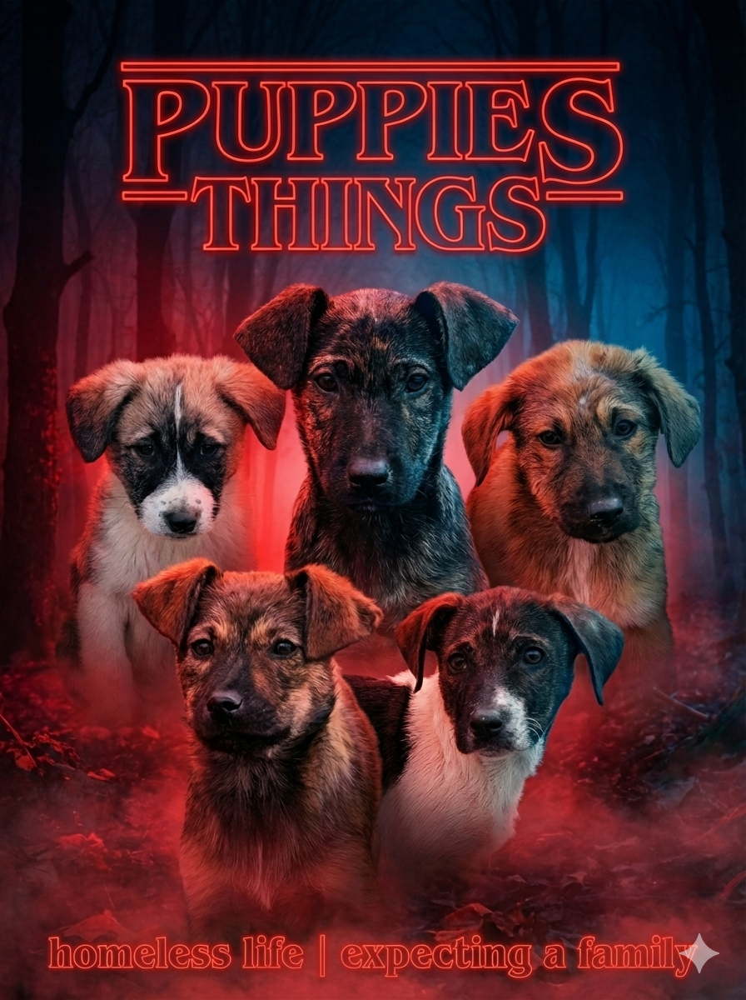
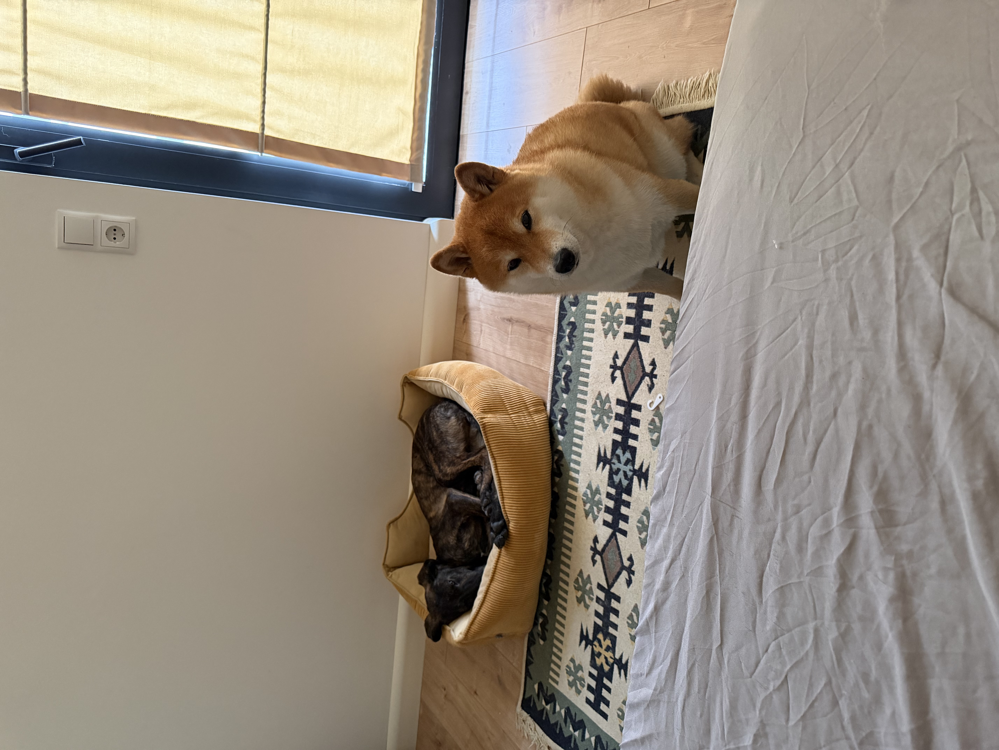

Her Story
From a cold corner of Tbilisi to a family that was waiting for her. Every stop along the way made her who she is.

New Year's Eve, a Hill, and Eight Puppies
Kiko was born into a pack of about 12 street dogs — a family that deeply distrusted humans and was scared of everything. Just before New Year, we found 8 puppies on a hill. On January 1st, in the rain, we dragged a doghouse up the slope. The puppies looked at it with complete indifference and decided not to live in it.
The neighbours threw rocks at them. People fed them salad, aubergine with mayonnaise, and whatever else was around. So we built an enclosure — brought doghouses, piles of cushions, blankets, and warm food twice a day. Kiko was the curious one. The playful one. The one who was always happy to see us, even when she didn't trust us yet.

The Whole Winter, Together
All winter we came every day — warm water, hot meals, flea treatment, and slow attempts at making friends. They weren't interested in being friends. But we kept showing up anyway.
Kiko and her siblings were vaccinated — which required heroic levels of catching. Then, in spring, we took Kiko, Bubka, and Ponyo to be spayed and started looking for homes for them.

One Cone, Zero Drama
She came through surgery calmly and without complaint. Spayed, chipped, vaccinated, and ready for the next chapter. The vet said she was in great shape. Kiko seemed to already know that.
2.5 Months That Changed Everything
That's how Kiko came to stay with us — me, my partner, and our dog Fuji. She lived with us for two and a half months. Sometimes easy, sometimes not. Always worth it.
We fell for her completely. And you will too.